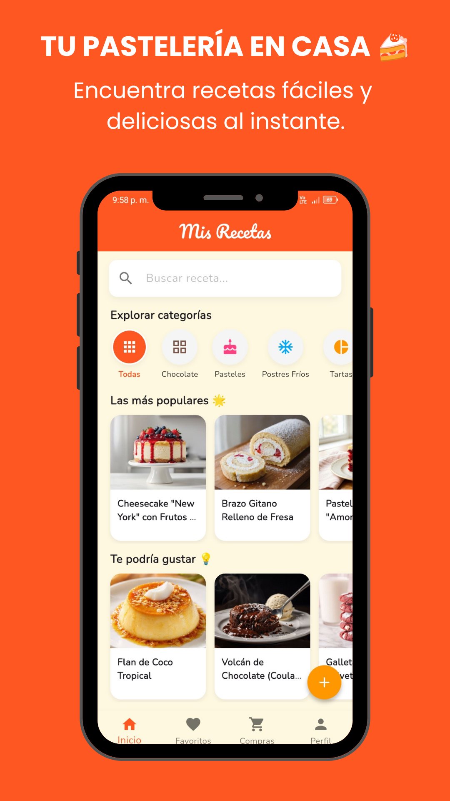
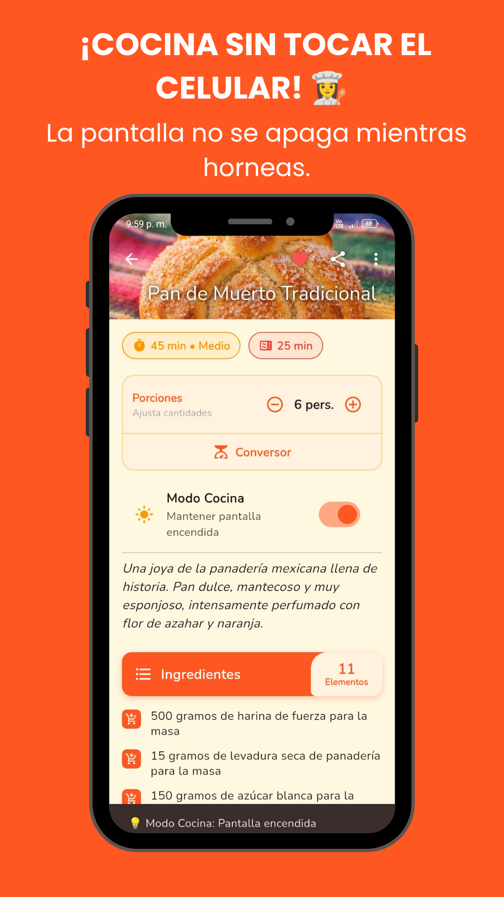
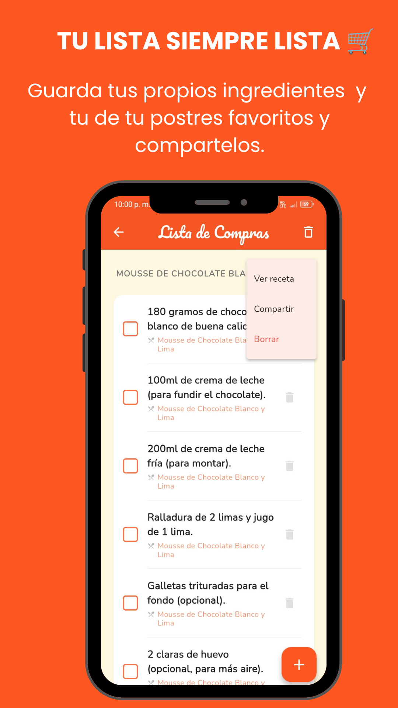

PostreChef: Recetario Inteligente
App Offline-First con Sincronización Cloud y Comunidad
1. Resumen Técnico
| Rol | Desarrollador Full Stack Mobile (Arquitectura, UI/UX, Backend). |
| Stack Core | Flutter, Dart (Configuración Kotlin DSL en Android). |
| Backend & Auth | Firebase (OAuth Google Sign-In, Cloud Storage, Cloud Messaging, Crashlytics). |
| Rendimiento UI | Uso de IndexedStack para navegación en memoria y Wakelock nativo. |
| Monetización | Yandex Mobile Ads integrado mediante patrón Singleton. |
| Lanzamiento | Marzo 2026 |
2. Lógica de Negocio y Arquitectura
- Arquitectura Escalable (Local a Cloud): Sistema híbrido que permite interacción inmediata sin registro usando shared_preferences (Modo Invitado). Al iniciar sesión (OAuth), un algoritmo migra la data local del usuario hacia Firebase de forma transparente para evitar pérdida de datos.
- Motor de Cálculo y Conversión: Desarrollo de una calculadora matemática dinámica que recalcula gramajes en tiempo real según el número de comensales, integrando un conversor de sistemas métricos (tazas a gramos) y un "Gestor Inteligente de Compras" con operaciones CRUD locales.
- Optimización de Navegación: Implementación de IndexedStack para el Bottom Navigation Bar. Esto mantiene las vistas principales vivas en memoria, anulando recargas innecesarias de UI o múltiples lecturas a la base de datos al cambiar de pestañas.
3. Interfaz y Experiencia de Usuario (UX)
Diseño centrado en la usabilidad culinaria, incluyendo un "Modo Cocina" (Wakelock) que interactúa con el sistema operativo para anular el tiempo de apagado de pantalla.

Directorio de Recetas

Calculadora de Comensales

Gestor de Compras CRUD
4. Resolución de Conflictos Técnicos
- Conflictos de Ofuscación R8 vs SDKs Nativos: Al compilar para producción, el motor R8 destruía referencias necesarias para Firebase y Yandex Ads. Diseñé reglas granulares estrictas en ProGuard (proguard-rules.pro) para ofuscar el 100% de la lógica Dart y aislar los componentes nativos, eliminando fallas en tiempo de ejecución.
- Ciclo de Vida en UI Asíncrona: La inyección de modales de "Novedades" en el initState generaba desbordamientos. Resolví esto implementando temporizadores asíncronos (Future.delayed) condicionados a validaciones estrictas de estado (if (mounted)), garantizando un renderizado seguro.
5. Tracción y Resultados (Q3 2026)
- Fuerte Adopción: Acumula más de 2,930 instalaciones desde su lanzamiento (Marzo 2026), probando la efectividad del sistema offline-first como gancho de retención.
- Comunidad Activa: Promedia 45 usuarios activos, validando las estrategias de push notifications (FCM) y la interacción sin fricciones.
- Calificación Óptima: Calificación sostenida de 5.0 estrellas en Google Play Store gracias al rendimiento sin bloqueos y tiempos de carga instantáneos asegurados por la gestión en memoria.